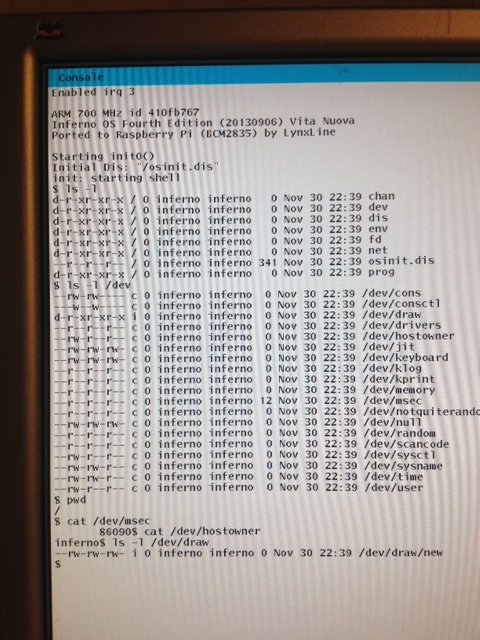

In previous Lab I got a screen working, but still no way to send commands into Raspberry computer. My guess that for time being it just simple enough to make the keyboard input coming from serial cable, so then I can play with Sh on raspberry and do some simple experiments onboard until I will have the Usb subsystem working and it recognize keyboard connected to RPi.
To work with input from Pl011 we should have it in non-blocking way. To do so we just make some function like pl011init() and check the serial io port for waiting bytes with timer (using addclock0link()). Take some consulting with port/devuart.c and see that for 115200 it is enough to check it every 22 ms. You may see that the programming is really simple:
1void
2pl011init(void)
3{
4 /*
5 * at 115200 baud, the 1024 char buffer takes 56 ms to process,
6 * processing it every 22 ms should be fine
7 */
8 addclock0link(pl011_clock, 22);
9}
And in pl011_clock we just check for waiting bytes:
1static void
2pl011_clock(void)
3{
4 char c;
5 int i;
6 if (pl011_tstc()) {
7 c = pl011_getc();
8 if (c == 13) {
9 pl011_putc('\r');
10 pl011_putc('\n');
11 kbdputc(kbdq,'\r');
12 kbdputc(kbdq,'\n');
13 return;
14 }
15 pl011_putc(c);
16 kbdputc(kbdq,c);
17 }
18}
But now if we try to execute something from osinit.b like Sh:
1init(nil: ref Draw->Context, nil: list of string)
2{
3 shell := load Sh "/dis/sh.dis";
4 sys = load Sys Sys->PATH;
5 sys->print("init: starting shell\n");
6
7 sys->bind("#i", "/dev", sys->MREPL); # draw device
8 sys->bind("#c", "/dev", sys->MAFTER); # console device
9 sys->bind("#u", "/dev", sys->MAFTER); # usb subsystem
10
11 spawn shell->init(nil, nil);
12}
We get a fault with lock:
$ panic: ilock: no way out: pc 0x30f1c: lock 0x0 held by pc 0xe59ff018
ktrace/kernel/path 00009578 00ad07f4 00000000
Tracing of the problem leads us to the fact that we haven’t initialized kbdq (Keyboard Queue). Simple fact but hard to reveal and sure you can not google about :). So add to pl011init():
1if(kbdq == nil)
2 kbdq = qopen(4*1024, 0, 0, 0);
Now Sh looks as started and when we try to type symbols on our serial console they also appear on screen connected to Raspberry Pi. Success! No, wait, attempt to run Ls give us the another fault:
$ ls
panic: Undefined instruction
ktrace/kernel/path 0000968c 00add608 00000000
[Ls] Broken: "sys: trap: fault pc=000095a4"
3 "Ls":sys: trap: fault pc=000095a4
,$ pwd
/
$ echo 123
123
$
But echo and pwd are working. So, what it can be? After long study and experiement first I found that when trap.c was written I put panic() for PsMund, but Inferno+Arm uses “undefined instructions” to work with FPU. Oops, we do not have any FPU codes currently. So started to migrate some code again from 9pi. Added fpiarm.c, had to adjust it to fit Inferno, but little. From port added fpi and fpimem. Some polishing, compiling and still faulting, but at least I know that it if FPU codes, so for now I just disabled fpemu() in fpiarm(). And I got Ls finally working!

FILES: